FGK Healing Center
11618 South St., #214, Artesia, CA 90701 562-924-8444, 714-331-6422
Oriental Medicine originated in China 5000 years ago. We use natural healing to adjust circulation, balance between Yin and Yang, in order to improve immunity and relieve pain. Acupuncture: Effective in treating stroke sequela, facial paralysis, asthma, insomnia, migraine, tinnitus, stress, infertility, menopause, sciatica, erectile dysfunction, all types of pain symptoms.
- Acupuncture, Acupressure, Cupping, Pain Relieve
- Weight Loss, Permanent Makeup, Skin Care, Waxing, Herbs
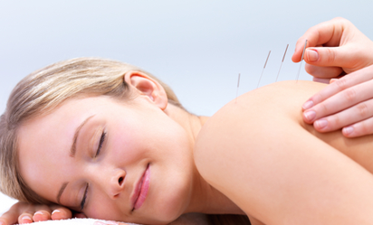 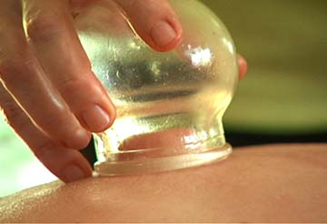
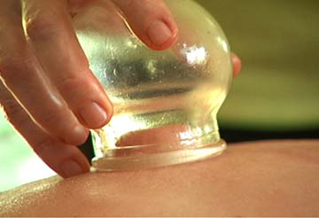
 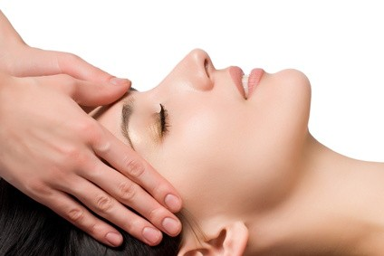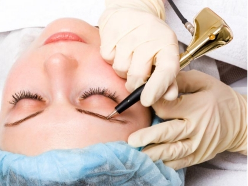
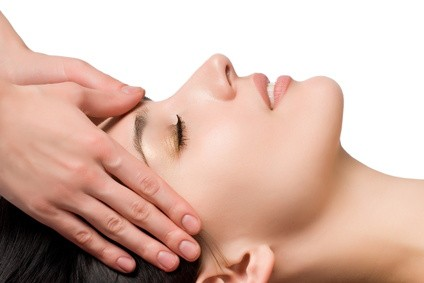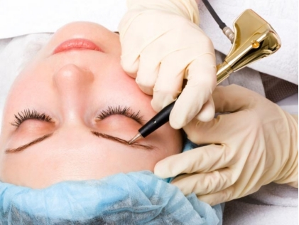
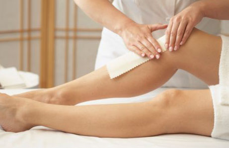
Fungal Nail Clinic
11618 South St., #214, Artesia, CA 90701 562-924-8444, 714-331-6422
Fungal nails can be transmitted to other people, and to other parts of body such as eyes, skin or Gynecological parts. Not only do they affect the individual’s image, but also can cause cancer. It is very important to get treatment for fungal nails. We use all natural herbal products and technology of ions penetration to completely kill fungus. Patients who have tried different methods of treatment and failed to be cured are welcome to try us today! Satisfaction guaranteed!
- Fungal Nail, Athlete’s Foot, Dry & Cracked, Itchy Skin
- Paronychia, Ring Worm, Skin Tag Removal
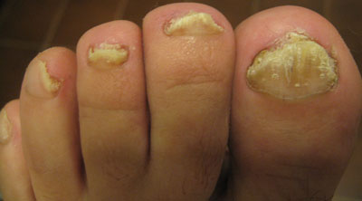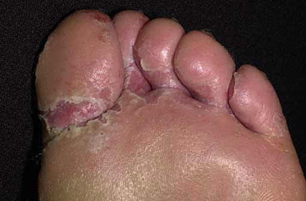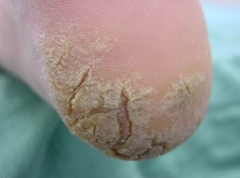
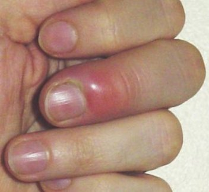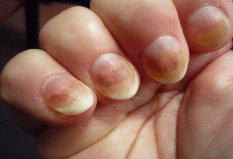
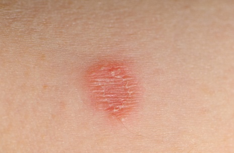